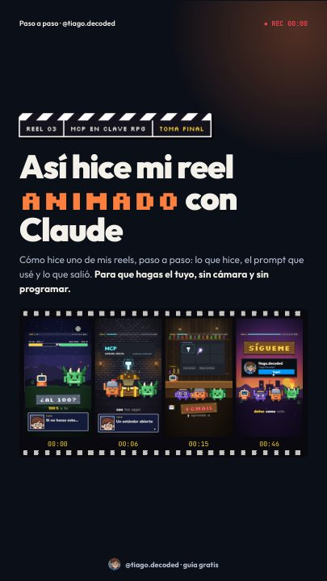
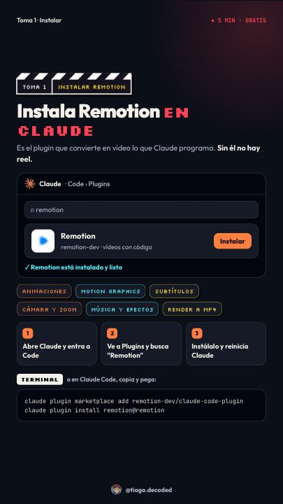
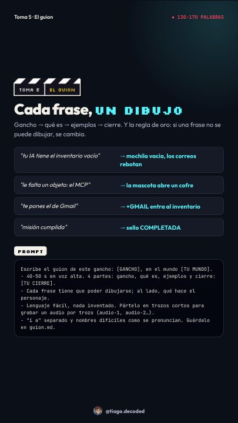

Haz vídeos con IA sin grabarte
Guion, voz, personajes y montaje con inteligencia artificial. Te regalo todo el proceso para que empieces hoy.
LO DE MIS REELS
¿Vienes de un reel? Aquí tienes lo que prometí en cada uno.
Skills de Instagram para Claude
13 skills gratis que escriben guiones, captions, respuestas y planes semanales. Son de la comunidad (licencia MIT), no mías.
Guía: arma tus propios agentes de IA
Qué es un agente y cómo crear tu equipo en Claude Code, paso a paso.
APRENDE
El flujo en 6 pasos
- Idea. Un tema de tu nicho que enganche en 2 segundos.
- Guion. Corto, una idea por escena y un cierre que pida seguirte.
- Voz. Narración con una voz de IA.
- Escenas. Personajes y una escena distinta por idea.
- Revisión. Mira cada escena antes de exportar.
- Publica. Música, texto en pantalla y caption.
DESCARGA GRATIS
Flujo básico de vídeos con IA
Los 6 pasos que sigo, de la idea al vídeo publicado. Un PDF de una página.
Skills gratis
Instrucciones que le enseñan a Claude Code a hacer una tarea paso a paso. Descárgalas y úsalas en tus vídeos.
Guion básico
Te escribe el guion de un vídeo de 30 a 60 s: tres ganchos, el texto de la voz y una tabla con lo que se ve en cada escena.
Ganchos
Diez ganchos para los 2 primeros segundos, cada uno con texto en pantalla y frase hablada, y te elige los tres mejores.
Remotion
Las skills oficiales para animar vídeos con código. Es la herramienta con la que monto mis reels.
Cómo instalar una skill
- Descarga el .zip y descomprímelo.
- Mueve la carpeta a
.claude/skills, dentro de tu carpeta de usuario. - Abre Claude Code y pídele, por ejemplo: «escríbeme el guion de un reel sobre…».
Regalo por seguirme
Guía: así hice mi reel animado con Claude
Te enseño cómo hice uno de mis reels, paso a paso, en 13 páginas: instalar Remotion, la idea, el mundo, el guion, la voz y el montaje, con los prompts listos para copiar.



¿Prefieres empezar ya? Copia el prompt rápido
PROMPT RÁPIDO · REEL ANIMADO CON CLAUDE Y REMOTION Usa la skill de Remotion. Sé mi director y montador: vamos a crear un reel vertical animado en pixel art, sin nadie a cámara. Trabajamos por fases y no pasas a la siguiente sin mi OK. == RELLENA ESTO == - Tema: [de qué va y qué se lleva quien lo vea] - Mundo: [una temática: RPG, ciudad, espacio…] - Personaje: [forma, colores, ropa] - Voz: [mi propia grabación / ElevenLabs] - Cierre: [sígueme / comenta / mini tutorial] == FASE 1 · GUION == - Gancho en 2 segundos. 4 partes: gancho, qué es, ejemplos y cierre. - Cada frase tiene que poder dibujarse y es una acción del personaje. - Pártelo en trozos para grabar un audio por trozo (audio-1, audio-2…). == FASE 2 · VOZ == - Espera mis audios. Quita pausas largas y acelera la voz a 1.1. == FASE 3 · PLAN == - Tabla por escena con los segundos: qué hace el personaje, si la cámara sigue o corta, zoom y texto. Espera mi OK. == FASE 4 · MONTAJE == - 1080x1920. Un lugar distinto por escena, personajes siempre en el suelo, mismo tamaño de píxel en todo. - Título de 3 líneas en el primer segundo y subtítulos de 1-3 palabras con la clave en color. Nada importante abajo del todo. - Enséñame un fotograma por escena antes del render. Luego MP4 a -14 LUFS.
Necesitas un plan de pago de Claude. Remotion y tu propia voz son gratis.
PREGUNTAS FRECUENTES
¿Necesito saber programar?
No. Le hablas a la IA en español y ella escribe el código. Tú decides el tema, apruebas el guion y revisas el resultado.
¿Qué necesito para empezar?
Un ordenador y Claude Code. Para la voz puedes grabarte tú o usar una voz de IA.
¿Tengo que salir en cámara?
No. Todo el vídeo es animado y la voz puede ser de IA. Nadie tiene que verte la cara.
¿El regalo es gratis de verdad?
Sí, todo. La guía completa y el prompt se desbloquean al seguirme en Instagram, sin pedirte correo ni teléfono.
¿Sirve para TikTok y YouTube Shorts?
Sí. El vídeo sale en vertical, el formato que usan Reels, Shorts y TikTok.
QUIÉN SOY
¡Hola! Soy Santiago 👋 En mis reels te explico cómo funciona la IA de forma sencilla, te enseño herramientas que de verdad te sirven en el día a día y te paso consejos y novedades de tecnología. Y todo lo que uso, te lo dejo aquí para que lo pruebes tú también.